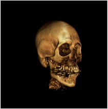

A collection of 3D graphics hacks I worked on from my younger days.
Smoke Particle Visualization
This was my first 3D graphics programming project. The data set consists of 40 frames of 4 variables each (3D position and temperature). Each particle is rendered in real time as a 3D point or sphere with color representing the temperature. The shadows were added to provide additional visual cue. The original version was written using HP's Starbase Graphics language which I later ported to OpenGL.
OpenGL Shading Framework
I developed an object oriented framework to make working with OpenGL 2.1 easier. The C++ class library initializes OpenGL extension entry points, provides file loading, compiling, linking and error checking of vertex and fragment programs. Run time methods are provided to enable, disable and pass parameters to programs. The framework’s base classes can be sub classed to create more complex shaders as shown in the examples that follow.
Parallel Ray Tracer
I ported a real-time SMP ray tracing program from IRIX/GL/SPROC to Linux/OpenGL/POSIX threads to demonstrate how scalable computing can be synchronized with double buffered OpenGL rendering. Arrays of semaphores were used to provide a barrier to synchronize worker threads with OpenGL buffer swaps. This demonstration was also used to illustrate how Linux resource control can be used to limit how much CPU a process can consume.
GPU-based Scalable Volumetric Shading
For SGI’s Prism system, I implemented a GPU fragment program, written in SIMD assembler, that performs high quality lighting on volumetric data. The OpenGL Volumizer API provided a multiple GPU scalable framework based on 2D screen decomposition. As each slice of the volume is rendered, callbacks are used to generate texture coordinates which are passed to the fragment shader. Using the texture coordinates, the shader computes the gradients on the fly using a forward difference method. Once the gradients are obtained, a full Phong lighting model is computed for each fragment. The user is able to control the light source and object position in real time. The image on the left is what a standard volumetric rendering looks like while the image on the right was rendered using a full Phong lighting and shading model.
3D MRI Reconstruction
This sample application was written to complement an introductory seminar on medical imaging I developed based on SGI’s OpenGL Volumizer API. It features user controllable CT transfer functions to easily locate bone and skin boundaries, clipping, volumetric lighting, trackball control and asymmetric stereo viewing to support immersive environments. The dataset of my head I obtained during a routine MRI. If you ever have an MRI or CT scan, always ask for your data, it makes for great conversation at parties!
Medical Data Visualizer
This project was done to complete an upper level course in Computer Graphics at the RIT. The application was written using the Visualization Toolkit (VTK) and runs under IRIX, LINUX and Windows. It includes features such as volumetric ray tracing, iso-surfacing, slicing, segmentation and LOD management and includes a user manual.
Video Chalkboard
Chalkboard is an application that allows the user to use the mouse as a pen to write over incoming live video. Each frame of video is captured using SGI’s video libraries and is written to the screen as pixels with OpenGL. The pen strokes are accumulated in a linked list then written on top of the video pixels as GL_LINES or pixels depending on which command line option is selected. Optionally, the blended output may be sent to video out.
Kodak DCS digital camera device driver and image viewer
Kodak released the DCS 10000 camera, drivers existed for only the Windows operating system. I developed a driver and imaging application under the IRIX operating system. The driver was written from scratch using user level SCSI libraries. Once, the image was acquired from the camera, it was scaled, balanced, shifted, interpolated, clipped and color corrected. A programmer’s guide but no example source code was provided by Kodak.